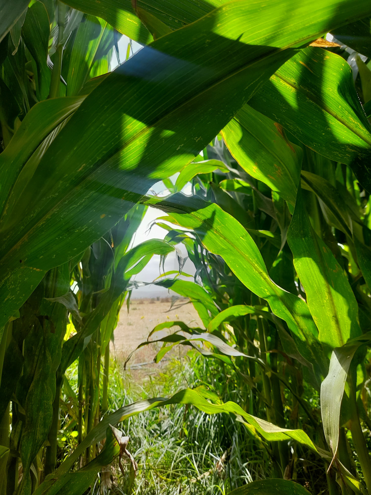

Plantes dont la graine possède un seul cotylédon (la partie embryonnaire de la graine qui devient les premières feuilles de la plante) des feuilles souvent étroites et parallèles avec des nervures parallèles, des organes floraux en multiples de trois, et un système racinaire souvent fibreux.

Dicotylédones
Plantes dont la graine possède deux cotylédons. Elles ont des feuilles avec des nervures réticulées ou ramifiées, comme le pissenlit. Leur croissance inclut à la fois une croissance primaire et secondaire, ce qui permet une plus grande épaisseur des tiges.
Mauvaises herbes et adventices
Définition : Plantes dont la graine possède un seul cotylédon.
Monocotylédones : Plantes dont la graine possède un seul cotylédon.
Dicotylédones : Plantes dont la graine possède deux cotylédons.
Différences
Feuilles :
Monocotylédones : Feuilles généralement longues et étroites avec des nervures parallèles (ex. herbe).
Dicotylédones : Feuilles avec des nervures réticulées ou ramifiées (ex. pissenlit).
Croissance :
Monocotylédones : Croissance primaire avec peu ou pas de croissance secondaire.
Dicotylédones : Croissance primaire et secondaire, permettant une plus grande épaisseur des tiges.
Gestion
Contexte :
Mauvaises herbes : Souvent utilisé dans un sens négatif, indiquant une nuisance pour les cultures.
Adventices : Terme plus neutre, englobant toutes les plantes spontanées, qu'elles soient nuisibles ou non.
Gestion :
Mauvaises herbes : Souvent ciblées pour être éliminées dans les pratiques agricoles.
Adventices : Certaines peuvent être tolérées ou même bénéfiques pour la biodiversité.